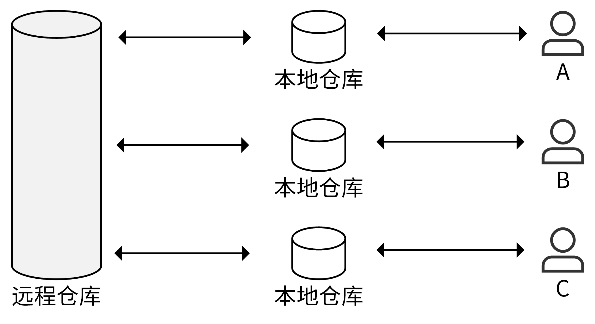
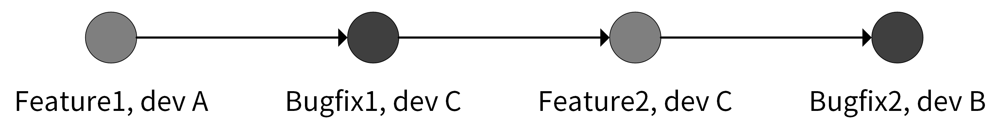
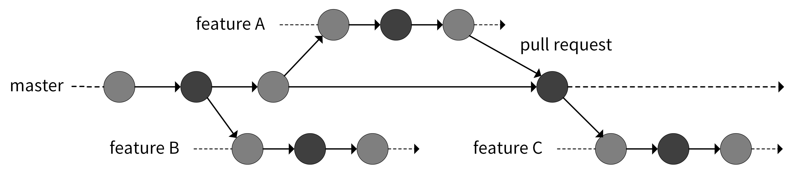
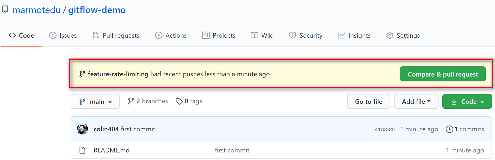
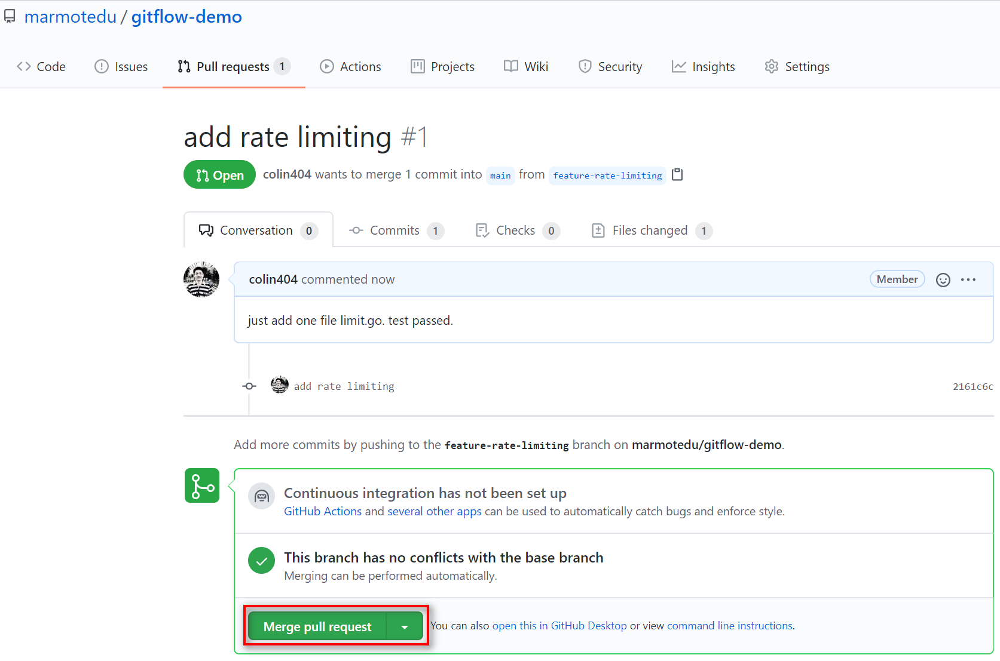
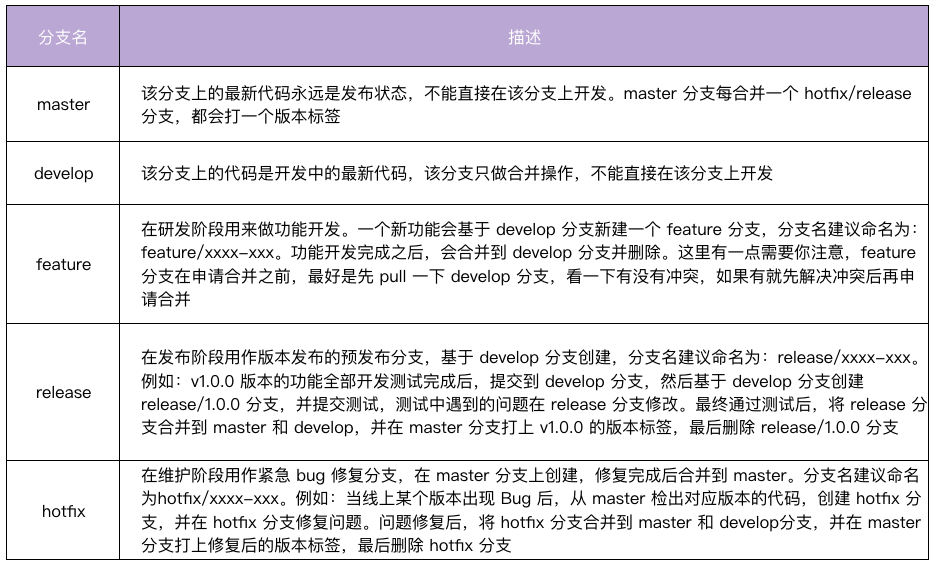
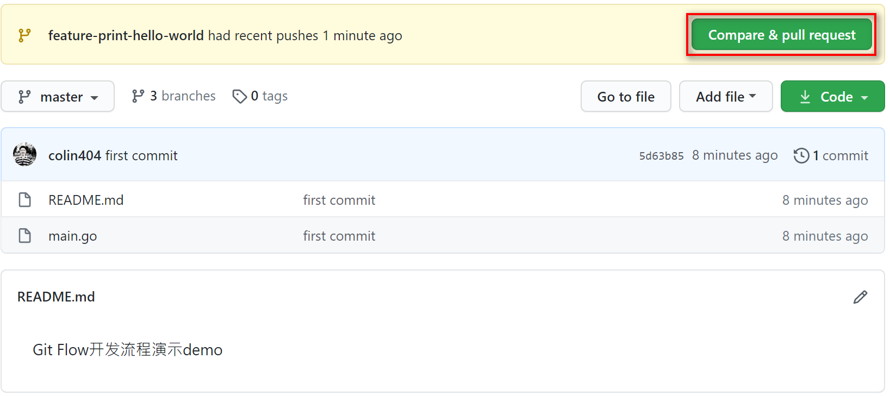
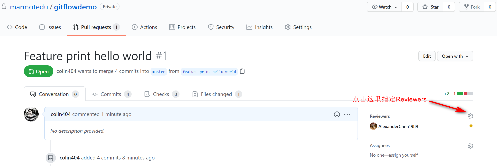
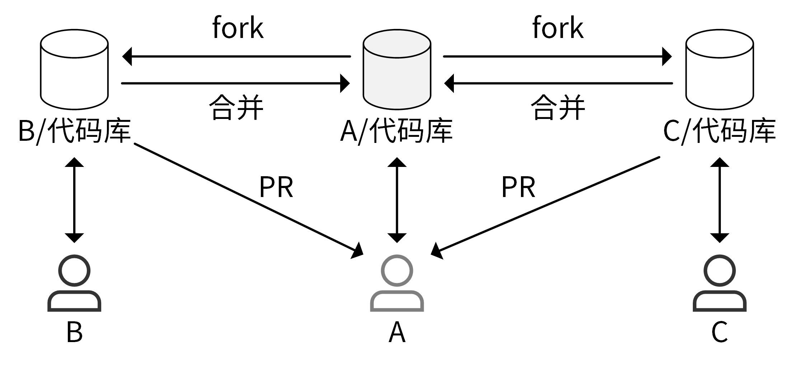
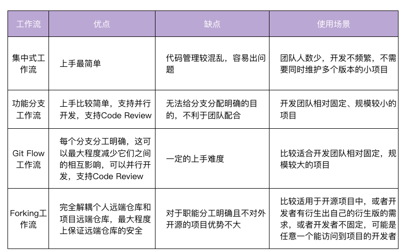

- 00 开篇词 从 0 开始搭建一个企业级 Go 应用.md.html
- 01 IAM系统概述：我们要实现什么样的 Go 项目？.md.html
- 02 环境准备：如何安装和配置一个基本的 Go 开发环境？.md.html
- 03 项目部署：如何快速部署 IAM 系统？.md.html
- 04 规范设计（上）：项目开发杂乱无章，如何规范？.md.html
- 05 规范设计（下）：commit 信息风格迥异、难以阅读，如何规范？.md.html
- 06 目录结构设计：如何组织一个可维护、可扩展的代码目录？.md.html
- 07 工作流设计：如何设计合理的多人开发模式？.md.html
- 08 研发流程设计（上）：如何设计 Go 项目的开发流程？.md.html
- 09 研发流程设计（下）：如何管理应用的生命周期？.md.html
- 10 设计方法：怎么写出优雅的 Go 项目？.md.html
- 11 设计模式：Go常用设计模式概述.md.html
- 12 API 风格（上）：如何设计RESTful API？.md.html
- 13 API 风格（下）：RPC API介绍.md.html
- 14 项目管理：如何编写高质量的Makefile？.md.html
- 15 研发流程实战：IAM项目是如何进行研发流程管理的？.md.html
- 16 代码检查：如何进行静态代码检查？.md.html
- 17 API 文档：如何生成 Swagger API 文档 ？.md.html
- 18 错误处理（上）：如何设计一套科学的错误码？.md.html
- 19 错误处理（下）：如何设计错误包？.md.html
- 20 日志处理（上）：如何设计日志包并记录日志？.md.html
- 21 日志处理（下）：手把手教你从 0 编写一个日志包.md.html
- 22 应用构建三剑客：Pflag、Viper、Cobra 核心功能介绍.md.html
- 23 应用构建实战：如何构建一个优秀的企业应用框架？.md.html
- 24 Web 服务：Web 服务核心功能有哪些，如何实现？.md.html
- 25 认证机制：应用程序如何进行访问认证？.md.html
- 26 IAM项目是如何设计和实现访问认证功能的？.md.html
- 27 权限模型：5大权限模型是如何进行资源授权的？.md.html
- 28 控制流（上）：通过iam-apiserver设计，看Web服务的构建.md.html
- 29 控制流（下）：iam-apiserver服务核心功能实现讲解.md.html
- 30 ORM：CURD 神器 GORM 包介绍及实战.md.html
- 31 数据流：通过iam-authz-server设计，看数据流服务的设计.md.html
- 32 数据处理：如何高效处理应用程序产生的数据？.md.html
- 33 SDK 设计（上）：如何设计出一个优秀的 Go SDK？.md.html
- 34 SDK 设计（下）：IAM项目Go SDK设计和实现.md.html
- 35 效率神器：如何设计和实现一个命令行客户端工具？.md.html
- 36 代码测试（上）：如何编写 Go 语言单元测试和性能测试用例？.md.html
- 37 代码测试（下）：Go 语言其他测试类型及 IAM 测试介绍.md.html
- 38 性能分析（上）：如何分析 Go 语言代码的性能？.md.html
- 39 性能分析（下）：API Server性能测试和调优实战.md.html
- 40 软件部署实战（上）：部署方案及负载均衡、高可用组件介绍.md.html
- 41 软件部署实战（中）：IAM 系统生产环境部署实战.md.html
- 42 软件部署实战（下）：IAM系统安全加固、水平扩缩容实战.md.html
- 43 技术演进（上）：虚拟化技术演进之路.md.html
- 44 技术演进（下）：软件架构和应用生命周期技术演进之路.md.html
- 45 基于Kubernetes的云原生架构设计.md.html
- 46 如何制作Docker镜像？.md.html
- 47 如何编写Kubernetes资源定义文件？.md.html
- 48 IAM 容器化部署实战.md.html
- 49 服务编排（上）：Helm服务编排基础知识.md.html
- 50 服务编排（下）：基于Helm的服务编排部署实战.md.html
- 51 基于 GitHub Actions 的 CI 实战.md.html
- 特别放送 Go Modules依赖包管理全讲.md.html
- 特别放送 Go Modules实战.md.html
- 特别放送 IAM排障指南.md.html
- 特别放送 分布式作业系统设计和实现.md.html
- 特别放送 给你一份Go项目中最常用的Makefile核心语法.md.html
- 特别放送 给你一份清晰、可直接套用的Go编码规范.md.html
- 直播加餐 如何从小白进阶成 Go 语言专家？.md.html
- 结束语 如何让自己的 Go 研发之路走得更远？.md.html
- 捐赠
07 工作流设计：如何设计合理的多人开发模式？
你好，我是孔令飞。今天我们来聊聊如何设计合理的开发模式。
一个企业级项目是由多人合作完成的，不同开发者在本地开发完代码之后，可能提交到同一个代码仓库，同一个开发者也可能同时开发几个功能特性。这种多人合作开发、多功能并行开发的特性如果处理不好，就会带来诸如丢失代码、合错代码、代码冲突等问题。
所以，在编码之前，我们需要设计一个合理的开发模式。又因为目前开发者基本都是基于 Git 进行开发的，所以本节课，我会教你怎么基于 Git 设计出一个合理的开发模式。
那么如何设计工作流呢？你可以根据需要，自己设计工作流，也可以采用业界沉淀下来的、设计好的、受欢迎的工作流。一方面，这些工作流经过长时间的实践，被证明是合理的；另一方面，采用一种被大家熟知且业界通用的工作流，会减少团队内部磨合的时间。在这一讲中，我会为你介绍4种受欢迎的工作流，你可以选择其中一种作为你的工作流设计。
在使用 Git 开发时，有4种常用的工作流，也叫开发模式，按演进顺序分为集中式工作流、功能分支工作流、Git Flow 工作流和Forking 工作流。接下来，我会按演进顺序分别介绍这 4 种工作流。
集中式工作流
我们先来看看集中式工作流，它是最简单的一种开发方式。集中式工作流的工作模式如下图所示：

A、B、C 为 3 位开发者，每位开发者都在本地有一份远程仓库的拷贝：本地仓库。A、B、C 在本地的 master 分支开发完代码之后，将修改后的代码commit到远程仓库，如果有冲突就先解决本地的冲突再提交。在进行了一段时间的开发之后，远程仓库 master 分支的日志可能如下图所示：

集中式工作流是最简单的开发模式，但它的缺点也很明显：不同开发人员的提交日志混杂在一起，难以定位问题。如果同时开发多个功能，不同功能同时往 master 分支合并，代码之间也会相互影响，从而产生代码冲突。
和其他工作流相比，集中式工作流程的代码管理较混乱，容易出问题，因此适合用在团队人数少、开发不频繁、不需要同时维护多个版本的小项目中。当我们想要并行开发多个功能时，这种工作流就不适用了，这时候怎么办呢？我们接下来看功能分支工作流。
功能分支工作流
功能分支工作流基于集中式工作流演进而来。在开发新功能时，基于 master 分支新建一个功能分支，在功能分支上进行开发，而不是直接在本地的 master 分支开发，开发完成之后合并到 master 分支，如下图所示：

相较于集中式工作流，这种工作流让不同功能在不同的分支进行开发，只在最后一步合并到master分支，不仅可以避免不同功能之间的相互影响，还可以使提交历史看起来更加简洁。
还有，在合并到 master 分支时，需要提交 PR（pull request），而不是直接将代码 merge 到 master 分支。PR 流程不仅可以把分支代码提供给团队其他开发人员进行 CR（Code Review），还可以在 PR 页面讨论代码。通过 CR ，我们可以确保合并到 master 的代码是健壮的；通过 PR 页面的讨论，可以使开发者充分参与到代码的讨论中，有助于提高代码的质量，并且提供了一个代码变更的历史回顾途径。
那么，功能分支工作流具体的开发流程是什么呢？我们一起来看下。
- 基于 master 分支新建一个功能分支，功能分支可以取一些有意义的名字，便于理解，例如feature/rate-limiting。
$ git checkout -b feature/rate-limiting
- 在功能分支上进行代码开发，开发完成后 commit 到功能分支。
$ git add limit.go
$ git commit -m "add rate limiting"
- 将本地功能分支代码 push 到远程仓库。
$ git push origin feature/rate-limiting
- 在远程仓库上创建 PR（例如：GitHub）。
进入 GitHub 平台上的项目主页，点击 Compare & pull request 提交 PR，如下图所示。

点击 Compare & pull request 后会进入 PR 页面，在该页面中可以根据需要填写评论，最后点击 Create pull request 提交 PR。
- 代码管理员收到 PR 后，可以 CR 代码，CR 通过后，再点击 Merge pull request 将 PR 合并到 master，如下图所示。

图中的“Merge pull request” 提供了 3 种 merge 方法：
- Create a merge commit：GitHub 的底层操作是
git merge --no-ff。feature 分支上所有的 commit 都会加到 master 分支上，并且会生成一个 merge commit。这种方式可以让我们清晰地知道是谁做了提交，做了哪些提交，回溯历史的时候也会更加方便。 - Squash and merge：GitHub 的底层操作是
git merge --squash。Squash and merge会使该 pull request 上的所有 commit 都合并成一个commit ，然后加到master分支上，但原来的 commit 历史会丢失。如果开发人员在 feature 分支上提交的 commit 非常随意，没有规范，那么我们可以选择这种方法来丢弃无意义的 commit。但是在大型项目中，每个开发人员都应该是遵循 commit 规范的，因此我不建议你在团队开发中使用 Squash and merge。 - Rebase and merge：GitHub 的底层操作是
git rebase。这种方式会将 pull request 上的所有提交历史按照原有顺序依次添加到 master 分支的头部（HEAD）。因为git rebase 有风险，在你不完全熟悉 Git 工作流时，我不建议merge时选择这个。
通过分析每个方法的优缺点，在实际的项目开发中，我比较推荐你使用 Create a merge commit 方式。
从刚才讲完的具体开发流程中，我们可以感受到，功能分支工作流上手比较简单，不仅能使你并行开发多个功能，还可以添加code review，从而保障代码质量。当然它也有缺点，就是无法给分支分配明确的目的，不利于团队配合。它适合用在开发团队相对固定、规模较小的项目中。接下来我们要讲的Git Flow 工作流以功能分支工作流为基础，较好地解决了上述问题。
Git Flow 工作流
Git Flow 工作流是一个非常成熟的方案，也是非开源项目中最常用到的工作流。它定义了一个围绕项目发布的严格分支模型，通过为代码开发、发布和维护分配独立的分支来让项目的迭代流程更加顺畅，比较适合大型的项目或者迭代速度快的项目。接下来，我会通过介绍Git Flow的5种分支和工作流程，来给你讲解GIt Flow是如何工作的。
Git Flow 的5种分支
Git Flow 中定义了 5 种分支，分别是 master、develop、feature、release和 hotfix。其中，master 和 develop 为常驻分支，其他为非常驻分支，不同的研发阶段会用到不同的分支。这5种分支的详细介绍见下表：

Git Flow 开发流程
这里我们用一个实际的例子来演示下Git Flow 的开发流程。场景如下：
a. 当前版本为：0.9.0。
b. 需要新开发一个功能，使程序执行时向标准输出输出“hello world”字符串。
c. 在开发阶段，线上代码有 Bug 需要紧急修复。
假设我们的 Git 项目名为 gitflow-demo，项目目录下有 2 个文件，分别是 README.md.html 和 main.go，内容如下。
package main
import "fmt"
func main() {
fmt.Println("callmainfunction")
}
具体的开发流程有 12 步，你可以跟着以下步骤操作练习。
- 创建一个常驻的分支：develop。
$ git checkout -b develop master
- 基于 develop 分支，新建一个功能分支：feature/print-hello-world。
$ git checkout -b feature/print-hello-world develop
- feature/print-hello-world 分支中，在 main.go 文件中添加一行代码
fmt.Println("Hello")，添加后的代码如下。
package main
import "fmt"
func main() {
fmt.Println("callmainfunction")
fmt.Println("Hello")
}
- 紧急修复 Bug。
我们正处在新功能的开发中（只完成了 fmt.Println("Hello")而非 fmt.Println("Hello World")）突然线上代码发现了一个 Bug，我们要立即停止手上的工作，修复线上的 Bug，步骤如下。
$ git stash # 1. 开发工作只完成了一半，还不想提交，可以临时保存修改至堆栈区
$ git checkout -b hotfix/print-error master # 2. 从 master 建立 hotfix 分支
$ vi main.go # 3. 修复 bug，callmainfunction -> call main function
$ git commit -a -m 'fix print message error bug' # 4. 提交修复
$ git checkout develop # 5. 切换到 develop 分支
$ git merge --no-ff hotfix/print-error # 6. 把 hotfix 分支合并到 develop 分支
$ git checkout master # 7. 切换到 master 分支
$ git merge --no-ff hotfix/print-error # 8. 把 hotfix 分支合并到 master
$ git tag -a v0.9.1 -m "fix log bug" # 9. master 分支打 tag
$ go build -v . # 10. 编译代码，并将编译好的二进制更新到生产环境
$ git branch -d hotfix/print-error # 11. 修复好后，删除 hotfix/xxx 分支
$ git checkout feature/print-hello-world # 12. 切换到开发分支下
$ git merge --no-ff develop # 13. 因为 develop 有更新，这里最好同步更新下
$ git stash pop # 14. 恢复到修复前的工作状态
- 继续开发。
在 main.go 中加入 fmt.Println("Hello World")。
- 提交代码到 feature/print-hello-world 分支。
$ git commit -a -m "print 'hello world'"
- 在 feature/print-hello-world 分支上做 code review。
首先，我们需要将 feature/print-hello-world push 到代码托管平台，例如 GitHub 上。
$ git push origin feature/print-hello-world
然后，我们在 GitHub 上，基于 feature/print-hello-world 创建 pull request，如下图所示。

创建完 pull request 之后，我们就可以指定 Reviewers 进行 code review，如下图所示。

- code review 通过后，由代码仓库 matainer 将功能分支合并到 develop 分支。
$ git checkout develop
$ git merge --no-ff feature/print-hello-world
- 基于 develop 分支，创建 release 分支，测试代码。
$ git checkout -b release/1.0.0 develop
$ go build -v . # 构建后，部署二进制文件，并测试
- 测试失败，因为我们要求打印“hello world”，但打印的是“Hello World”，修复的时候，
我们直接在 release/1.0.0 分支修改代码，修改完成后，提交并编译部署。
$ git commit -a -m "fix bug"
$ go build -v .
- 测试通过后，将功能分支合并到 master 分支和 develop 分支。
$ git checkout develop
$ git merge --no-ff release/1.0.0
$ git checkout master
$ git merge --no-ff release/1.0.0
$ git tag -a v1.0.0 -m "add print hello world" # master 分支打 tag
- 删除 feature/print-hello-world 分支，也可以选择性删除 release/1.0.0 分支。
$ git branch -d feature/print-hello-world
亲自操作一遍之后，你应该会更了解这种模式的优缺点。它的缺点，就是你刚才已经体会到的，它有一定的上手难度。不过Git Flow工作流还是有很多优点的：Git Flow工作流的每个分支分工明确，这可以最大程度减少它们之间的相互影响。因为可以创建多个分支，所以也可以并行开发多个功能。另外，和功能分支工作流一样，它也可以添加code review，保障代码质量。
因此，Git Flow工作流比较适合开发团队相对固定，规模较大的项目。
Forking 工作流
上面讲的Git Flow 是非开源项目中最常用的，而在开源项目中，最常用到的是Forking 工作流，例如 Kubernetes、Docker 等项目用的就是这种工作流。这里，我们先来了解下 fork 操作。
fork 操作是在个人远程仓库新建一份目标远程仓库的副本，比如在 GitHub 上操作时，在项目的主页点击 fork 按钮（页面右上角），即可拷贝该目标远程仓库。Forking 工作流的流程如下图所示。

假设开发者 A 拥有一个远程仓库，如果开发者 B 也想参与 A 项目的开发，B 可以 fork 一份 A 的远程仓库到自己的 GitHub 账号下。后续 B 可以在自己的项目进行开发，开发完成后，B 可以给 A 提交一个 PR。这时候 A 会收到通知，得知有新的 PR 被提交，A 会去查看 PR 并 code review。如果有问题，A 会直接在 PR 页面提交评论，B 看到评论后会做进一步的修改。最后 A 通过 B 的 PR 请求，将代码合并进了 A 的仓库。这样就完成了 A 代码仓库新特性的开发。如果有其他开发者想给 A 贡献代码，也会执行相同的操作。
GitHub中的 Forking 工作流详细步骤共有6步（假设目标仓库为 gitflow-demo），你可以跟着以下步骤操作练习。
- Fork 远程仓库到自己的账号下。
访问https://github.com/marmotedu/gitflow-demo ，点击fork按钮。fork 后的仓库地址为：https://github.com/colin404fork/gitflow-demo 。-
- 克隆 fork 的仓库到本地。
$ git clone https://github.com/colin404fork/gitflow-demo
$ cd gitflow-demo
$ git remote add upstream https://github.com/marmotedu/gitflow-demo
$ git remote set-url --push upstream no_push # Never push to upstream master
$ git remote -v # Confirm that your remotes make sense
origin https://github.com/colin404fork/gitflow-demo (fetch)
origin https://github.com/colin404fork/gitflow-demo (push)
upstream https://github.com/marmotedu/gitflow-demo (fetch)
upstream https://github.com/marmotedu/gitflow-demo (push)
- 创建功能分支。
首先，要同步本地仓库的 master 分支为最新的状态（跟 upstream master 分支一致）。
$ git fetch upstream
$ git checkout master
$ git rebase upstream/master
然后，创建功能分支。
$ git checkout -b feature/add-function
- 提交 commit。
在 feature/add-function 分支上开发代码，开发完代码后，提交 commit。
$ git fetch upstream # commit 前需要再次同步 feature 跟 upstream/master
$ git rebase upstream/master
$ git add <file>
$ git status
$ git commit
分支开发完成后，可能会有一堆 commit，但是合并到主干时，我们往往希望只有一个（或最多两三个）commit，这可以使功能修改都放在一个或几个commit中，便于后面的阅读和维护。这个时候，我们可以用 git rebase 来合并和修改我们的 commit，操作如下：
$ git rebase -i origin/master
第5讲已经介绍过了git rebase -i 的使用方法 ，如果你有疑问可以再去看看，这里不再说明。
还有另外一种合并 commit 的简便方法，就是先撤销过去 5 个 commit，然后再建一个新的：
$ git reset HEAD~5
$ git add .
$ git commit -am "Here's the bug fix that closes #28"
$ git push --force
squash 和 fixup 命令，还可以当作命令行参数使用，自动合并 commit。
$ git commit --fixup
$ git rebase -i --autosquash
- push 功能分支到个人远程仓库。
在完成了开发，并 commit 后，需要将功能分支 push 到个人远程代码仓库，代码如下：
$ git push -f origin feature/add-function
- 在个人远程仓库页面创建 pull request。
提交到远程仓库以后，我们就可以创建 pull request，然后请求reviewers进行代码 review，确认后合并到 master。这里要注意，创建pull request时，base通常选择目标远程仓库的master分支。
我们已经讲完了 Forking 工作流的具体步骤，你觉得它有什么优缺点呢？
结合操作特点，我们来看看它的优点：Forking工作流中，项目远程仓库和开发者远程仓库完全独立，开发者通过提交 Pull Request 的方式给远程仓库贡献代码，项目维护者选择性地接受任何开发者的提交，通过这种方式，可以避免授予开发者项目远程仓库的权限，从而提高项目远程仓库的安全性，这也使得任意开发者都可以参与项目的开发。
但Forking工作流也有局限性，就是对于职能分工明确且不对外开源的项目优势不大。
Forking工作流比较适用于以下三种场景：（1）开源项目中；（2）开发者有衍生出自己的衍生版的需求；（3）开发者不固定，可能是任意一个能访问到项目的开发者。
总结
这一讲中，我基于 Git 向你介绍了 4 种开发模式，现在跟我回顾一下吧。
- 集中式工作流：开发者直接在本地 master 分支开发代码，开发完成后 push 到远端仓库 master 分支。
- 功能分支工作流：开发者基于 master 分支创建一个新分支，在新分支进行开发，开发完成后合并到远端仓库 master 分支。
- Git Flow 工作流：Git Flow 工作流为不同的分支分配一个明确的角色，并定义分支之间什么时候、如何进行交互，比较适合大型项目的开发。
- Forking 工作流：开发者先 fork 项目到个人仓库，在个人仓库完成开发后，提交 pull request 到目标远程仓库，远程仓库 review 后，合并 pull request 到 master 分支。
集中式工作流是最早的Git工作流，功能分支工作流以集中式工作流为基础，Git Flow 工作流又是以功能分支工作流为基础，Forking工作流在Git Flow 工作流基础上，解耦了个人远端仓库和项目远端仓库。
每种开发模式各有优缺点，适用于不同的场景，我总结在下表中：

总的来说，在选择工作流时，我的推荐如下：
- 非开源项目采用 Git Flow 工作流。
- 开源项目采用 Forking 工作流。
因为这门课的实战项目对于项目开发者来说是一个偏大型的非开源项目，所以采用了Git Flow工作流。
课后练习
- 请你新建立一个项目，并参考Git Flow开发流程，自己操作一遍，观察每一步的操作结果。
- 请你思考下，在 Git Flow 工作流中，如果要临时解决一个 Bug，该如何操作代码仓库。
期待在留言区看到你的思考和分享，我们下一讲见！
© 2019 - 2023 Liangliang Lee. Powered by gin and hexo-theme-book.